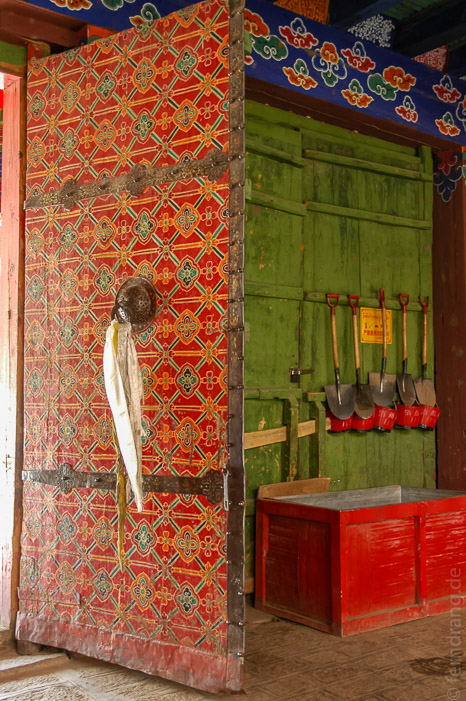

Heute war Kloster-Tag. Zuerst haben wir uns auf den Weg zum Samye-Kloster gemacht. Dazu sind wir den Tsangpo wieder ein Stückchen flussaufwärts bis zu einem Bootsanleger gefahren; oder besser einem Stück Ufer an dem die Boote anlegen. Die Überfahrt fand in einem alten, flach, breit und eckig gebauten Holzkahn statt. Wir hatten es uns schon mit einer Gruppe tibetischer Mönche auf dem Boot gemütlich gemacht. Doch tibetische Planung ist nicht so einfach. Also mussten alle wieder raus und zuerst ein großer Stapel Holz und Waren verladen werden. Nachher war fuer die Mönche kein Platz mehr. So viel zum Thema Respekt vor dem Klerus.
Die Überfahrt hat ewig gedauert, weil wir uns an unzähligen Sandbänken vorbei durch die Windungen des Tsangpo schlängeln mussten. Die umliegenden Berge und Dünen boten in der Morgensonne ein prächtiges Bild.
Nach eineinhalb Stunden sind wir am anderen Ufer in einen Bus gestiegen, um zum Kloster Samye zu fahren, das fast genau gegenüber der Stelle lag, von der wir abgefahren sind. Der Bus zeichnete sich durch ein erstickend buttriges Klima aus. Wegen der staubigen Strecke blieben die Fenster aber leider geschlossen. Mitreisende haben sich dann um die Überlagerung des Gestanks gekümmert, indem sie rauchten.
Das Kloster Samye ist das älteste buddhistische Kloster Tibets. Es ist in verschiedenen Stilen (tibetisch, chinesisch, indisch) übereinander gebaut und beherbergt viele Heiligenstatuen. Das Innere ist vollends mit Wandmalereien verziert. Auf dem Klosterhof wird unentweg etwas verbrannt, von dem man annimmt, dass die Götter es mögen; klar ist nur, dass Menschen es nicht mögen.
Die Rückfahrt ging schneller. Die nächste Station war der Yumbulagang - ein ehemaliger Königspalast. Er ist zwar sehr klein und geradezu bescheiden gebaut. Aber seine exponierte Lage auf einem spitzen Felsen lässt ihn von fruchtbaren Ebene aus darunter durchaus beeindruckend wirken. Im Palast wohnen nur wenige Mönche. Sie haben die ehrenvolle Aufgabe die heiligsten Schriftstücke Tibets zu bewachen, die hier teils vom Himmel gefallen sind und teils angefertigt wurden. Denn der Tempel ist auch die Geburtsstätte der tibetischen Schrift.
Auf dem Rückweg haben wir einen Abstecher zum Tandrok-Kloster gemacht. Das Kloster ist weniger spektakulär als die anderen beiden. Aber es ist auch eines der ältesten Tibets. Es beinhaltet neben dem üblichen Klosterinventar noch besonders riesige Gebetsmühlen, die man kaum alleine bewegen kann. Highlight im Dachgeschoss ist ein Bildnis einer Luxus-Göttin, das aus zigtausenden von Perlen hergestellt wurde.